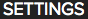
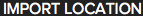
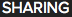
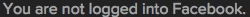
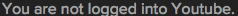

import gda_utils from sikuli import Sikuli from sikuli import * from __builtin__ import True, False import org.sikuli.basics.SikulixForJython class GenSettings: def __init__(self): self.auto_launch=False self.auto_download=False self.auto_play=False self.auto_sync=False self.import_location="" self.media_folder=[] self.fails="\nGenSettings: REPORT TESTS FAILED" self.passes="\nGenSettings: REPORT TESTS PASSED" def evalgensettings(self): p=Pattern().similar(0.69) # gensettings_btn_backtomedia rsettings=gda_utils.EXISTS3("GENSETTINGS","TOP",p,5) if not rsettings: self.fails += "\nFAILED to find: %s" % str(p) else: self.passes += "\nPASSED: %s" % str(p) p=Pattern().similar(0.69) # gensettings_btn_selected rsettings=gda_utils.EXISTS3("GENSETTINGS","LEFTPANEL",p,5) if not rsettings: self.fails += "\nFAILED to find: %s" % str(p) else: self.passes += "\nPASSED: %s" % str(p) p=Pattern().similar(0.69) # gensettings_btn_cloudsettings-unselected rsettings=gda_utils.EXISTS3("GENSETTINGS","LEFTPANEL",p,5) if not rsettings: self.fails += "\nFAILED to find: %s" % str(p) else: self.passes += "\nPASSED: %s" % str(p) p=Pattern().similar(0.68) # gensettings_btn_feedback rsettings=gda_utils.EXISTS3("GENSETTINGS","LEFTPANEL",p,5) if not rsettings: self.fails += "\nFAILED to find: %s" % str(p) else: self.passes += "\nPASSED: %s" % str(p) p=Pattern().similar(0.69) #gensettings_lbl_title-settings rsettings=gda_utils.EXISTS3("GENSETTINGS","TITLE",p,5) if not rsettings: self.fails += "\nFAILED to find: %s" % str(p) else: self.passes += "\nPASSED: %s" % str(p) p=Pattern().similar(0.69) rsettings=gda_utils.EXISTS3("GENSETTINGS","SETTINGS_IMPORTLOCATION",p,5) if not rsettings: self.fails += "\nFAILED to find: %s" % str(p) else: self.passes += "\nPASSED: %s" % str(p) p=Pattern().similar(0.69) rsettings=gda_utils.EXISTS3("GENSETTINGS","SETTINGS_IMPORTLOCATION",p,5) if not rsettings: self.fails += "\nFAILED to find: %s" % str(p) else: self.passes += "\nPASSED: %s" % str(p) p=Pattern().similar(0.69) rsettings=gda_utils.EXISTS3("GENSETTINGS","SETTINGS_IMPORTLOCATION",p,5) if not rsettings: self.fails += "\nFAILED to find: %s" % str(p) else: self.passes += "\nPASSED: %s" % str(p) p=Pattern().similar(0.69) rsettings=gda_utils.EXISTS3("GENSETTINGS","SETTINGS_MEDIAFOLDER",p,5) if not rsettings: self.fails += "\nFAILED to find: %s" % str(p) else: self.passes += "\nPASSED: %s" % str(p) p=Pattern().similar(0.69) rsettings=gda_utils.EXISTS3("GENSETTINGS","SETTINGS_MEDIAFOLDER",p,5) if not rsettings: self.fails += "\nFAILED to find: %s" % str(p) else: self.passes += "\nPASSED: %s" % str(p) p=Pattern().similar(0.69) rsettings=gda_utils.EXISTS3("GENSETTINGS","SETTINGS_MEDIAFOLDER",p,5) if not rsettings: self.fails += "\nFAILED to find: %s" % str(p) else: self.passes += "\nPASSED: %s" % str(p) p=Pattern().similar(0.69).targetOffset(-22,0) rsettings=gda_utils.EXISTS3("GENSETTINGS","SETTINGS_MEDIAFOLDER",p,5) if not rsettings: self.fails += "\nFAILED to find: %s" % str(p) else: self.passes += "\nPASSED: %s" % str(p) p=Pattern().similar(0.69).targetOffset(-17,0) rsettings=gda_utils.EXISTS3("GENSETTINGS","SETTINGS_MEDIAFOLDER",p,5) if not rsettings: self.fails += "\nFAILED to find: %s" % str(p) else: self.passes += "\nPASSED: %s" % str(p) p=Pattern().similar(0.69) rsettings=gda_utils.EXISTS3("GENSETTINGS","SETTINGS_MEDIAFOLDER",p,5) if not rsettings: self.fails += "\nFAILED to find: %s" % str(p) else: self.passes += "\nPASSED: %s" % str(p) p=Pattern().similar(0.69) #gensettings_chk_autolaunch-checked rsettings=gda_utils.EXISTS3("GENSETTINGS","SETTINGS_CHECKBOXAUTO",p,5) if not rsettings: self.fails += "\nFAILED to find: %s" % str(p) else: self.passes += "\nPASSED: %s" % str(p) rsettings.click() p=Pattern().similar(0.69) #gensettings_chk_autolaunch-unchecked rsettings=gda_utils.EXISTS3("GENSETTINGS","SETTINGS_CHECKBOXAUTO",p,5) if not rsettings: self.fails += "\nFAILED to find: %s" % str(p) else: self.passes += "\nPASSED: %s" % str(p) rsettings.click() p=Pattern().similar(0.69) #gensettings_chk_autodownload-checked rsettings=gda_utils.EXISTS3("GENSETTINGS","SETTINGS_CHECKBOXAUTO",p,5) if not rsettings: self.fails += "\nFAILED to find: %s" % str(p) else: self.passes += "\nPASSED: %s" % str(p) rsettings.click() p=Pattern().similar(0.69) #gensettings_chk_autodownload-unchecked rsettings=gda_utils.EXISTS3("GENSETTINGS","SETTINGS_CHECKBOXAUTO",p,5) if not rsettings: self.fails += "\nFAILED to find: %s" % str(p) else: self.passes += "\nPASSED: %s" % str(p) rsettings.click() p=Pattern().similar(0.69) #gensettings_chk_autoplay-unchecked rsettings=gda_utils.EXISTS3("GENSETTINGS","SETTINGS_CHECKBOXAUTO",p,5) if not rsettings: self.fails += "\nFAILED to find: %s" % str(p) else: self.passes += "\nPASSED: %s" % str(p) rsettings.click() p=Pattern().similar(0.69) #gensettings_chk_autoplay-checked rsettings=gda_utils.EXISTS3("GENSETTINGS","SETTINGS_CHECKBOXAUTO",p,5) if not rsettings: self.fails += "\nFAILED to find: %s" % str(p) else: self.passes += "\nPASSED: %s" % str(p) rsettings.click() p=Pattern().similar(0.69) #gensettings_chk_autosync-unchecked rsettings=gda_utils.EXISTS3("GENSETTINGS","SETTINGS_CHECKBOXAUTO",p,5) if not rsettings: self.fails += "\nFAILED to find: %s" % str(p) else: self.passes += "\nPASSED: %s" % str(p) rsettings.click() p=Pattern().similar(0.69) #gensettings_chk_autosync-checked rsettings=gda_utils.EXISTS3("GENSETTINGS","SETTINGS_CHECKBOXAUTO",p,5) if not rsettings: self.fails += "\nFAILED to find: %s" % str(p) else: self.passes += "\nPASSED: %s" % str(p) rsettings.click() p=Pattern().similar(0.69) #gensettings_btn_onlinesupport rsettings=gda_utils.EXISTS3("GENSETTINGS","SETTINGS_CHECKBOXAUTO",p,5) if not rsettings: self.fails += "\nFAILED to find: %s" % str(p) else: self.passes += "\nPASSED: %s" % str(p) rsettings.click() p=Pattern().similar(0.69) #gensettings_btn_sendfeedback rsettings=gda_utils.EXISTS3("GENSETTINGS","SETTINGS_CHECKBOXAUTO",p,5) if not rsettings: self.fails += "\nFAILED to find: %s" % str(p) else: self.passes += "\nPASSED: %s" % str(p) p=Pattern().similar(0.69) #gensettings_lbl_sharing rsettings=gda_utils.EXISTS3("GENSETTINGS","SETTINGS_SHARING",p,5) if not rsettings: self.fails += "\nFAILED to find: %s" % str(p) else: self.passes += "\nPASSED: %s" % str(p) p=Pattern().similar(0.69) #gensettings_lbl_sharing-notloggedinfacebook rsettings=gda_utils.EXISTS3("GENSETTINGS","SETTINGS_SHARING",p,5) if not rsettings: self.fails += "\nFAILED to find: %s" % str(p) else: self.passes += "\nPASSED: %s" % str(p) p=Pattern().similar(0.69) #gensettings_lbl_sharing-notloggedinyoutube rsettings=gda_utils.EXISTS3("GENSETTINGS","SETTINGS_SHARING",p,5) if not rsettings: self.fails += "\nFAILED to find: %s" % str(p) else: self.passes += "\nPASSED: %s" % str(p) ###################################### # Assumes automation window size Mac{x35,y35,w1280, h836} # for windows using Autoit we need to identify the inner region w,h relative to mac and set the win size accordingly # Win,Mac window container border widths are different # this is global region list for more accurate image query ###################################### def set_gensettings_regions(REGION): screenregion="GENSETTINGS" subregion="TOP" rx=REGION.getX() ry=REGION.getY()#+REGION.getH()-80 rw=REGION.getW() rh=80 r=Region(rx,ry,rw,rh) #r.highlight(1) gda_utils.add_region(screenregion,subregion,r) subregion="LEFTPANEL" rx=REGION.getX() ry=REGION.getY()+80 rw=238 rh=REGION.getH()-80 r=Region(rx,ry,rw,rh) #r.highlight(5) gda_utils.add_region(screenregion,subregion,r) subregion="TITLE" rx=REGION.getX()+ 238 ry=REGION.getY()+90 rw=REGION.getW()-238 rh=80 r=Region(rx,ry,rw,rh) #r.highlight(5) gda_utils.add_region(screenregion,subregion,r) subregion="SETTINGS_IMPORTLOCATION" r=r.below(120) #r.highlight(5) gda_utils.add_region(screenregion,subregion,r) subregion="SETTINGS_MEDIAFOLDER" r=r.below(230) #r.highlight(5) gda_utils.add_region(screenregion,subregion,r) subregion="SETTINGS_CHECKBOXAUTO" r=r.below(200) #r.highlight(5) gda_utils.add_region(screenregion,subregion,r) subregion="SETTINGS_SHARING" r=r.below(100) #r.highlight(5) gda_utils.add_region(screenregion,subregion,r) def mediafolder_addnew(pathdir): m=gda_utils.EXISTS3("GENSETTINGS","SETTINGS_MEDIAFOLDER",Pattern().similar(0.69),5) if m: m.click() ###################################### # for debugging in sikuli ide # # ###################################### def test_module(): gda_utils.GetEnvInfo() gpa,gpr=gda_utils.AppStart("GoPro") set_gensettings_regions(gpr) g=GenSettings() if not g: print "Error: failed to create GenSettings class" return g.evalgensettings() print g.passes print g.fails ###################################### # for debugging in sikuli ide # # KEEP THIS COMMENTED when checking in to GIT ###################################### test_module()